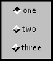

All Packages Class Hierarchy This Package Previous Next Index
java.lang.Object | +----java.awt.CheckboxGroup
CheckboxGroup class is used to group together
a set of Checkbox buttons.
Exactly one check box button in a CheckboxGroup can
be in the "on" state at any given time. Pushing any
button sets its state to "on" and forces any other button that
is in the "on" state into the "off" state.
The following code example produces a new check box group, with three check boxes:
setLayout(new GridLayout(3, 1));
CheckboxGroup cbg = new CheckboxGroup();
add(new Checkbox("one", cbg, true));
add(new Checkbox("two", cbg, false));
add(new Checkbox("three", cbg, false));
This image depicts the check box group created by this example:

CheckboxGroup.
public CheckboxGroup()
CheckboxGroup.
public Checkbox getSelectedCheckbox()
null if all check boxes in the
group are off.
null.
public Checkbox getCurrent()
getSelectedCheckbox().
public synchronized void setSelectedCheckbox(Checkbox box)
If the check box argument is null or belongs to a
different check box group, then this method does nothing.
Checkbox to set as the
current selection.
public synchronized void setCurrent(Checkbox box)
setSelectedCheckbox(Checkbox).
public String toString()
All Packages Class Hierarchy This Package Previous Next Index